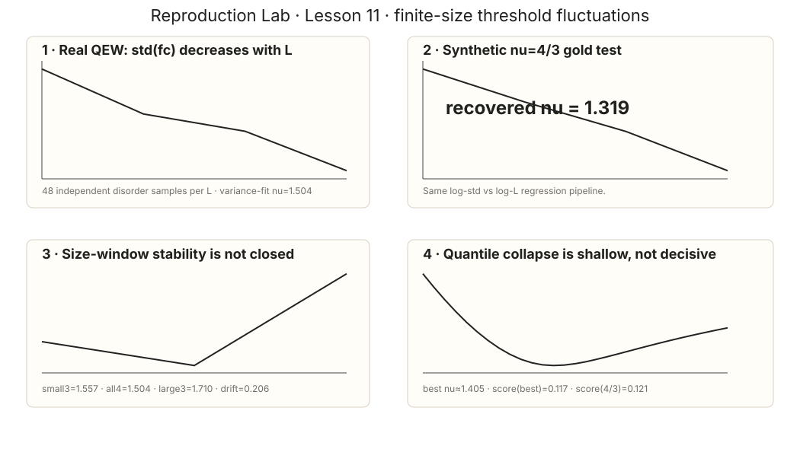

看到 fc 波动变小，只是 FSS 的起点，不是 ν 的终点
Lesson10 已经确认 small-QEW critical geometry 具有 super-rough signature，但 global ζ 仍有明显 size drift。本课换一条独立的 finite-size observable：不同 disorder realization 的 sample threshold 分布。Ferrero 给出的核心关系是 Var(fcsample)∼L−2/ν。我们先验证拟合器，再冻结 4 个尺寸 × 48 个独立 realization 的 threshold table，最后同时检查 size-window stability 与 distribution collapse。
0 · 原论文 Fig.4(b)：finite sample threshold 本来就是随机变量

对每个 finite disorder sample，critical force 定义为仍存在 metastable configuration 的最大外力。随着 L 增大，sample-to-sample fluctuations 应被压低：
1 · 先锁住 aspect protocol，不让 transverse periodicity 偷偷改变问题
Ferrero Fig.4(b) 使用 M=kLζdep。沿用 Lesson10 已确认的 super-rough ζ≈1.25 作为几何 aspect guide，本课令 transverse physical period 近似按 L1.25 增长，而不是固定 M/L。
| L | M grid points | M·du | realizations |
|---|---|---|---|
| 32 | 320 | 80 | 48 |
| 64 | 736 | 184 | 48 |
| 128 | 1728 | 432 | 48 |
| 256 | 4096 | 1024 | 48 |
每个 sample 都使用同一 T=0 pinned/moving classifier；moving certificate 保持为 COM 前进 1 个完整 u-period。threshold bisection 固定 9 次，因此所有 bracket 宽度都是 0.001953125。
2 · synthetic gold test：同一个 regression 必须先恢复 ν=4/3
用 512 个 synthetic samples / size 人工生成 std∝L−1/(4/3) 的 threshold fluctuations，再把完全相同的 log-std vs log-L regression 跑一遍：
3 · 真实 threshold fluctuations 确实随 L 收缩
| L | mean fc | std(fc) |
|---|---|---|
| 32 | 0.819978841 | 0.064453427 |
| 64 | 0.823315430 | 0.033881635 |
| 128 | 0.823396810 | 0.026465858 |
| 256 | 0.821850586 | 0.015059779 |
mean threshold 在我们自己的 disorder normalization 下约 0.82；它不应和 Ferrero 模型的 thermodynamic fc≈1.916 做数值比较。这里真正可比的是 scaling structure：sample fluctuations 随 L 被压低。
4 · 四尺寸 fit 看起来不错，但 size-window 还没闭合
| fit window | νeff |
|---|---|
| L=32,64,128 | 1.557481 |
| L=32,64,128,256 | 1.503976 |
| L=64,128,256 | 1.709690 |
对 realization 做 3000 次 bootstrap，all-four ν 的 95% 区间为：
这个区间包含 QEW 由 statistical tilt symmetry 与 ζ≈1.25 推出的 ν≈4/3，但“包含 benchmark”不是 universality 证据。它只说明当前数据还没有精确到能排除那一值。
5 · collapse 也不能单独救场
把每个尺寸的 centered threshold distribution 写成 x=(fc−⟨fc⟩)L1/ν，用 0.1–0.9 quantiles 比较四个尺寸的分布形状，并扫描 ν。结果：
| ν | quantile-collapse score（越小越好） |
|---|---|
| best scan | ν=1.405；score=0.117003 |
| ν=4/3 | 0.120858 |
| variance-fit ν=1.504 | 0.123243 |
6 · 这节证明了什么？没证明什么？
已经证明
sample threshold fluctuations 随 L 明显收缩；ν regression 能恢复 synthetic 4/3；raw threshold table 有 48 independent realizations/size；distribution rescaling 出现宽而浅的 collapse basin。
没有证明
没有稳定 thermodynamic ν；没有独立完成 universal collapse；没有把 ν≈1.50 当成材料常数；也没有证明 sliding-FE wall 已属于 QEW universality class。
7 · 快速 analysis script + frozen raw threshold table
打开完整分析脚本 → 打开 run receipt → 打开 192-row raw CSV →
SYNTHETIC FSS GOLD TEST = PASS nu all four sizes = 1.503976 nu smallest three = 1.557481 nu largest three = 1.709690 size-window nu drift = 0.205713 realization-bootstrap 95% nu = [1.241478, 1.903499] quantile-collapse best nu = 1.405000 SIZE-WINDOW STABILITY GATE = NOT PASSED UNIVERSAL NU CLAIM = NOT AUTHORIZED
8 · 最后一课：Lesson12 · finite-T rounding / creep
L07–L11 已把 T=0 threshold、steady velocity、β failure、super-rough geometry 与 finite-size threshold fluctuations 串起来。最后一课不再添加新的 T=0 exponent，而是打开 T>0：先验证 thermal rounding 的基本 scaling contract，再把低场 activated motion 与 creep 的证据边界分开。